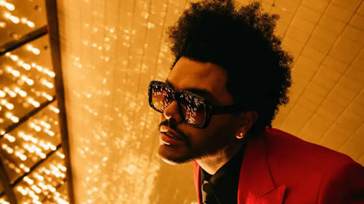
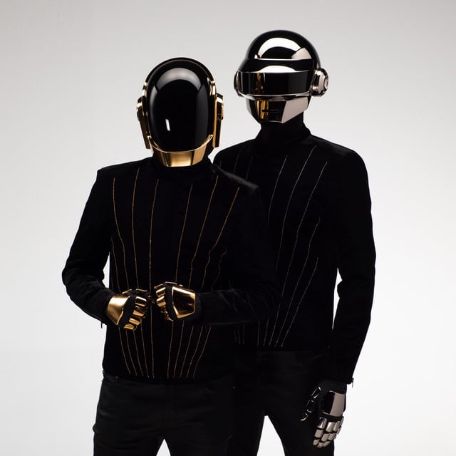
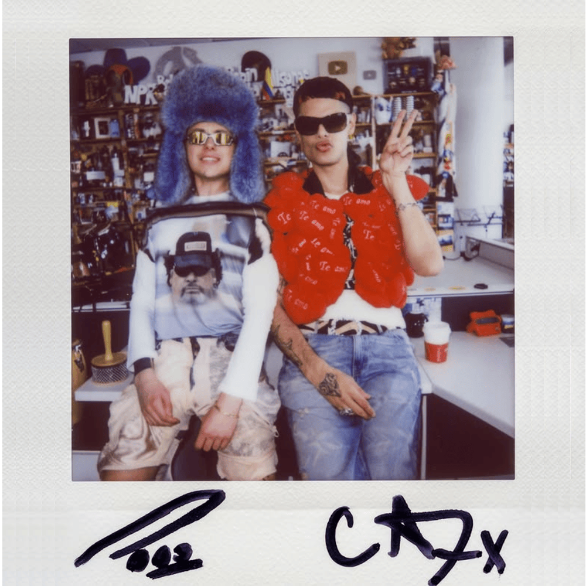
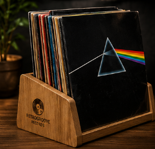
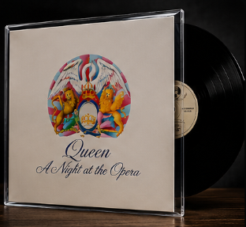
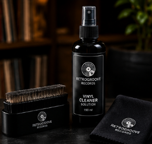
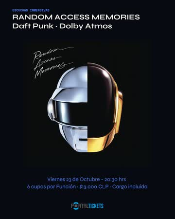

Catálogo de Vinilos

Random Access Memories · Daft Punk
Edición especial para coleccionistas prensada en vinilo negro de 180 gramos. Masterización analógica con sonido envolvente de alta fidelidad.

After Hours · The Weeknd
Cuarto álbum de estudio cargado de nostalgia synthwave y R&B ochentero. Prensado doble de alta fidelidad con éxitos mundiales como "Heartless" y "Blinding Lights".

Un Verano Sin Ti · Bad Bunny
El álbum más exitoso de Bad Bunny, combinando ritmos caribeños, reggaetón e indie en una edición de audio cálido y envolvente.
Artistas Destacados

The Weeknd
Figura indiscutible del pop y R&B contemporáneo. Sus prensados en vinilo capturan una atmósfera cinematográfica con bajos profundos y sintetizadores analógicos.

Daft Punk
Leyendas de la música electrónica francesa. Sus álbumes en vinilo son piezas de culto para audiófilos gracias a su impecable fidelidad y riqueza rítmica.

CA7RIEL & Paco Amoroso
Dúo argentino vanguardista que rompe esquemas fusionando rock, hip-hop y funk. Una experiencia sonora enérgica y visceral que cobra vida en el tocadiscos.
Accesorios
Soporte de vinilos · Roble macizo

35×18×20 cm 1.4 kg Discos de 10" y 12"Soporte de madera natural para exhibir tu colección de vinilos y tener el disco más escuchado siempre a la vista.
Funda acrílica protectora para discos LP

31.5 × 31.5 cm 0.4 kg LP de 12" · 33 rpmFunda acrílica transparente que protege la portada de tus LP del polvo y la luz sin esconder el arte de la carátula.
Kit completo de limpieza de vinilos

18×12×6 cm 0.6 kg Discos de 33 y 45 rpmKit completo con cepillo antistático y solución limpiadora para quitar el polvo y aliviar los saltos de tu vinilo.
Sesiones de Escucha

Random Access Memories a oscuras
Escucha completa del álbum en vinilo de 180 gramos. Side B, local principal.

After Hours · Listening Party
Noche synthwave con el álbum completo y sorteo de un vinilo. Side B, local principal.

Noche Punk en Vinilo
Sesión de escucha de clásicos del punk en prensados originales. Side B, local principal.